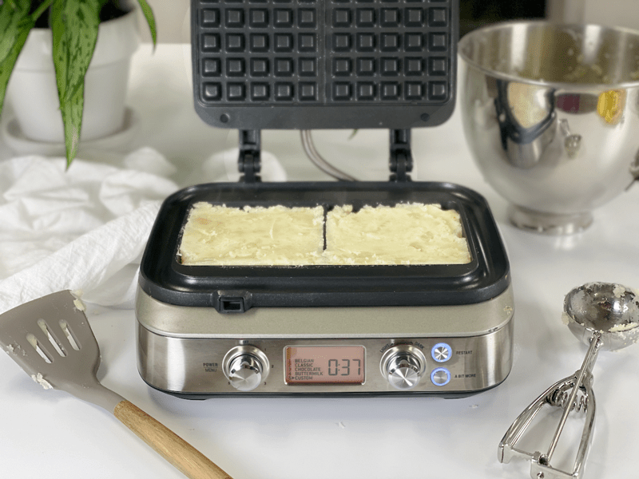
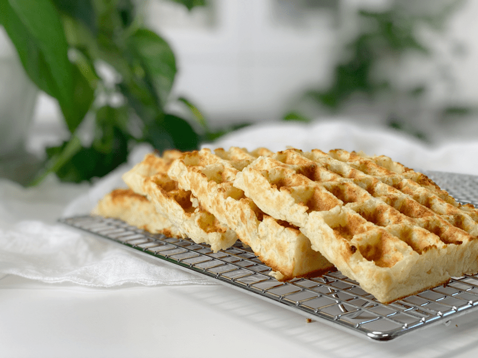

Grand Slam Mashed Potato Waffles | Oil-Free
Grand Slam Mashed Potato Waffles! If you love potatoes, you are going to love these waffles. I kept this recipe very simple; potatoes, vegetable broth, and salt. Since I didn’t veer too far away from the potato, this recipe is naturally vegan, gluten-free, oil-free, fat-free, grain-free, and nut-free.

Do you ever have those aha moments when you silently wonder, “Why didn’t I think of that before?” I had one of those moments while visiting my great-grandparents. I must have been around the age of seven or so. I was sitting in the middle of the den floor in front of a box fan.
I would lean into the fan and talk into the spinning fan blades (think Darth Vader). I was quietly entertaining myself when great-grandma walked by and said, “Amie Sue, don’t stick your finger in that fan!” As soon as she disappeared around the corner, I looked at the fan and thought, “Hmm…what happens if I stick my finger…ZAP!” the fan blades hit my finger. The power of suggestion is amazing! So, when I was trying to think of what do with all my mashed potatoes, all I could hear was my great-grandmother’s voice scolding, “Don’t put those potatoes in that waffle machine!” Thus the Grand Slam Mashed Potato Waffle was born.
Make Every Bite Count
- Start by using organic potatoes. According to the USDA’s Pesticide Data Program, 35 different pesticides have been found on conventional potatoes. Of these, 6 are known or probable carcinogens, 12 are suspected hormone disruptors, 7 are neurotoxins, and 6 are developmental or reproductive toxins.
- Steam the potatoes, rather than boiling them. Since the potatoes’ nutrients are water-soluble, they WILL leach out of the boiled potato and into the cooking water, which is usually discarded. Steaming them removes far fewer nutrients, which will leave the potato more vitamin-filled.
- If you use a store-bought vegetable broth, check the sodium count on the box or can. If it is high in salt, reduce the amount of additional salt added to the recipe. You can always taste test and add more if need be. Speaking of taste testing, be sure to read my post called The Value of Tasting as You Go.
- Learn to enjoy simple foods! Complex recipes are wonderful when you want to experience flavor explosions, but simplicity can taste just as wonderful.
I hope you enjoy this recipe. For plating inspiration, please check out the Loaded Mashed Potato Waffles that I had for lunch. Please be sure to leave a comment below and have a wonderful day. blessings, amie sue

Ingredients
Yields 6 4″x4″ square waffles
- 3 lbs peeled russet potatoes, steamed
- 1 cup vegetable broth
- 1/2 tsp sea salt
- 2 Tbsp chives (optional)
Preparation
Potato Steaming Options
Option 1 -Steam Method | Stove Top
- Scrub, peel, and cut the potatoes into uniform-sized pieces (so they cook evenly.)
- Russet potatoes are my first choice due to their softer texture when cooked. I have also used a 50/50 mix of starchy russet potatoes and waxy, buttery Yukon golds.
- Add about one inch of water to a large pot and bring to a boil.
- Once the water comes to a boil, place the loaded steamer basket into the pot. Sprinkle the potatoes with the salt and cover.
- Turn the heat to medium and let steam until fork-tender, roughly 20 to 30 minutes. The potatoes must be fully cooked, or else your end result will be lumpy.
- Using a slotted spoon or a strainer, transfer the cooked potatoes to a glass or metal mixing bowl.
Option 2 – Steam Method | Instant Pot
- Wash potatoes, peel (if desired), dice in uniform sizes (so they cook evenly).
- Add 2 cups of water to the Instant Pot, place loaded steam basket in the pot.
- You don’t want the potatoes sitting in too much water. If using a 6-quart unit, only use 1 cup of water.
-
Attach and secure the lid and turn the pressure valve to the “Sealing” position.
-
Press “Manual,” place on high pressure, and adjust the cooking time for 7 minutes.
-
When machine beeps, do a quick release by turning the valve to the “Venting” position. Be very careful of the steam shooting out of the valve.
Assembly of Ingredients
- With an electric hand mixer (or handheld potato masher) gradually mix the potatoes in a large mixing bowl along with the vegetable broth and salt. Mix until smooth and fluffy. Set aside.
- Be careful that you don’t overmix the potatoes, or they can become gummy.
- Add chives in at the last minute if desired.
Waffle Iron Method
- Preheat the waffle maker. Once the waffle maker is ready, fill each waffle cavity with the mashed potatoes. Press down firmly, reaching all sides.
- Close the lid to cook. My machine took 8 minutes. Keep a close eye on your first batch to see how long your machine takes, since they all differ.
- A good indicator that the waffle is nearing completion is when you stop seeing steam escape from the machine.
- Either plate the waffles up for the family or place them on wire racks so air can circulate around them to prevent sogginess.
-
Repeat until the batter is used up.
-
These waffles should keep in the fridge for at least 4 or 5 days or frozen for up to 3 months. When ready to enjoy, pop them in the toaster until hot and crispy on the outside.
-

-
Place the potatoes in the steamer basket.
-

-
Lightly mash the potatoes before adding the seasoning.
-

-
Perfectly whipped!
-

-
Press the mash potatoes into the waffle iron.
-
-
Cook until steam stops rising from the machine and they are nice and brown.
-

-
Ready for enjoyment!
© AmieSue.com